I visited New York in December hoping to experience Christmas in New York, and it did not disappoint! I visited the week before Christmas because plane tickets skyrocket closer to the holidays, and the holiday spirit was still quite festive in mid-December. Here are 3 unique ways to enjoy the Christmas festivities in New York:
1. Do Some Christmas Shopping at the Holiday Markets
Christmas markets are a holiday-unique thing in the city that resembled European Christmas markets — I was able to find some affordable and delicious food here as well as some cute holiday gifts!
Bryant Park Winter Village is probably the largest Christmas market in the city, open late October through the New Year. It is an open-air market with stalls selling delicious food from around the world and cute local gifts ranging from antique lamps and jewelry to apparel and artwork to soaps and candles.
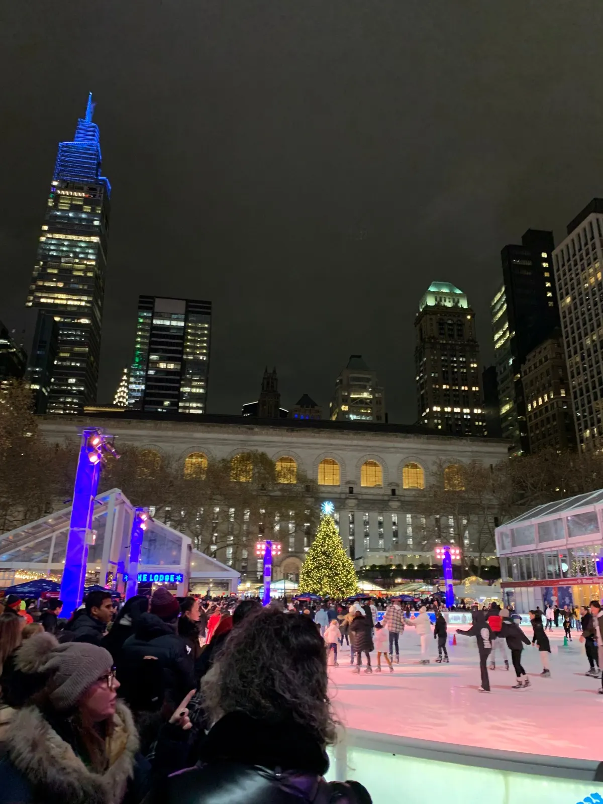
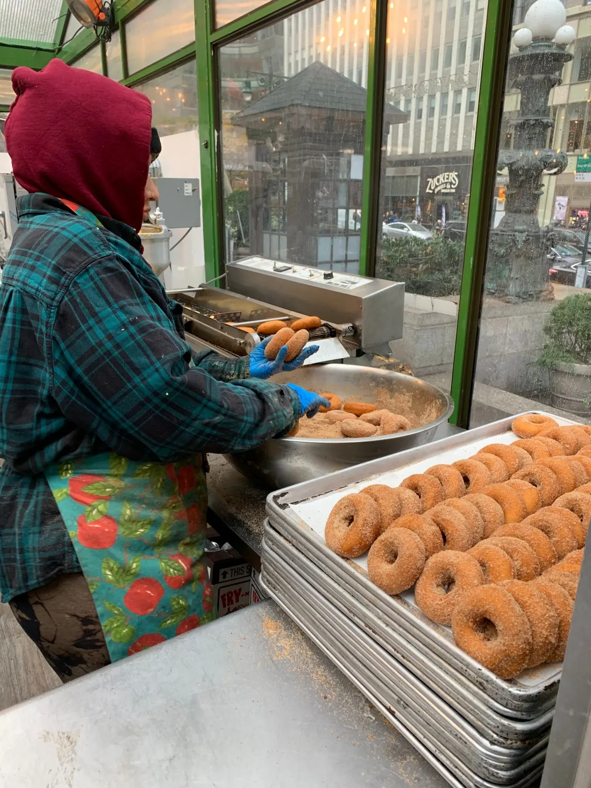
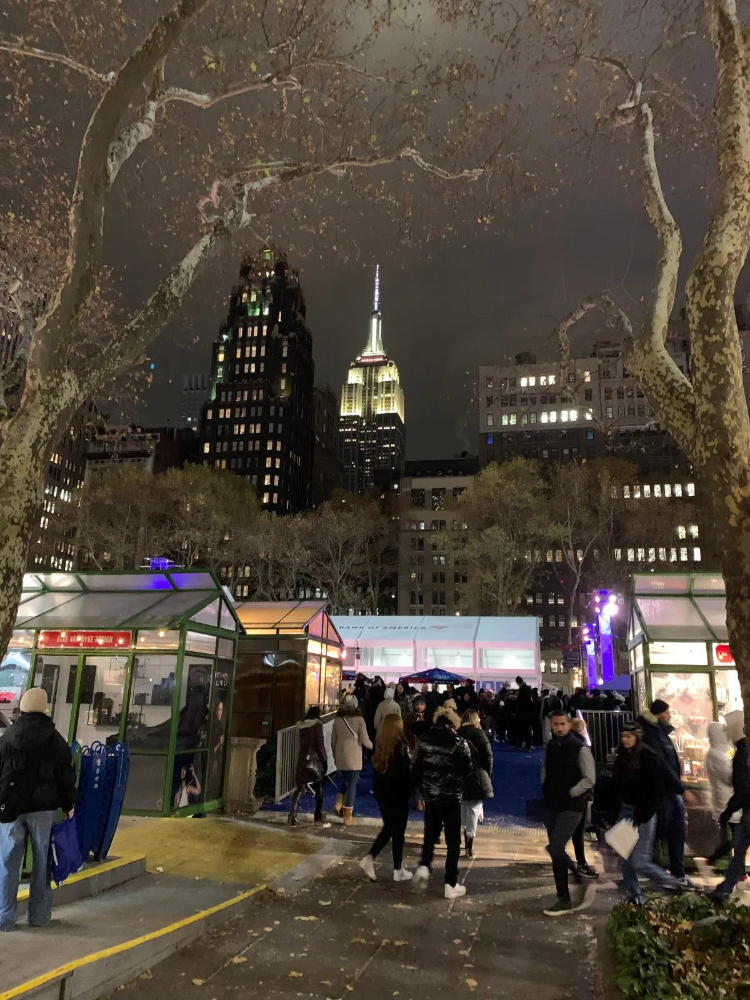
Union Square Holiday Market also has some cute shops — I had some warm and delicious pierogis and empanadas and got a cute ornament from a shop called “Christmas in New York.”
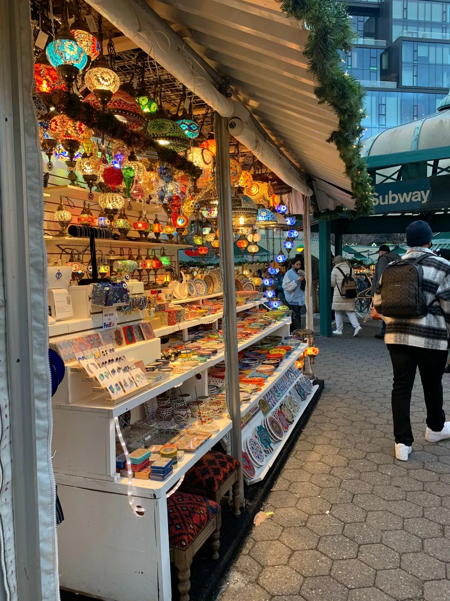
2. Check Out the Holiday Decorations
There are holiday light decorations all around the city, here are a few worth checking out:
Macy’s has cute holiday lights and window displays, with the inside decorated too.
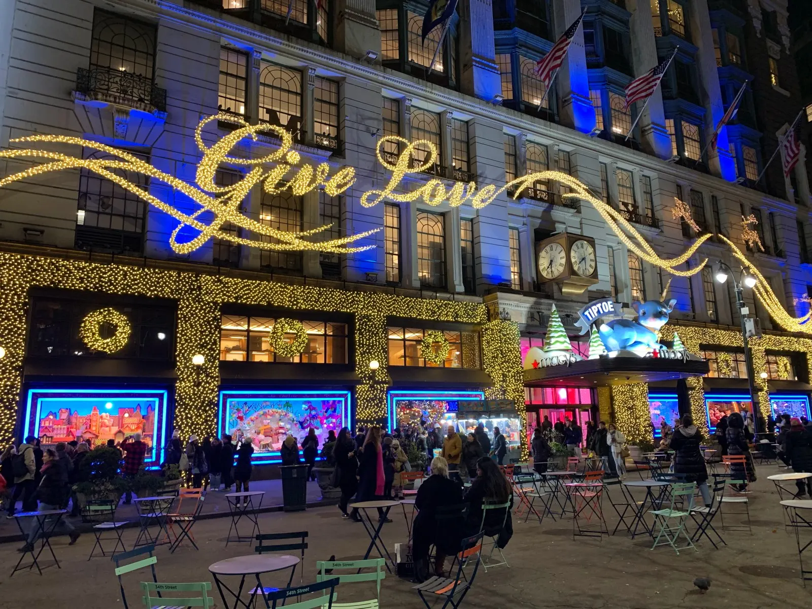
Saks Fifth Avenue has a festive light show with music.
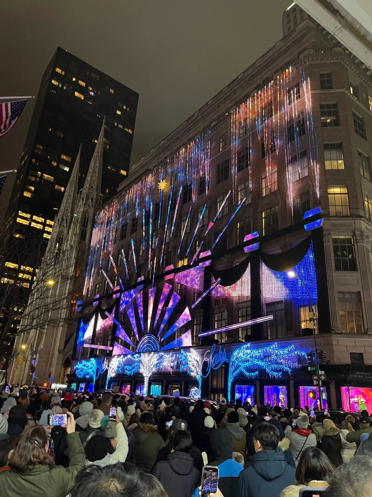
Rockefeller Center has the largest Christmas tree in the city with an ice skating rink below it.
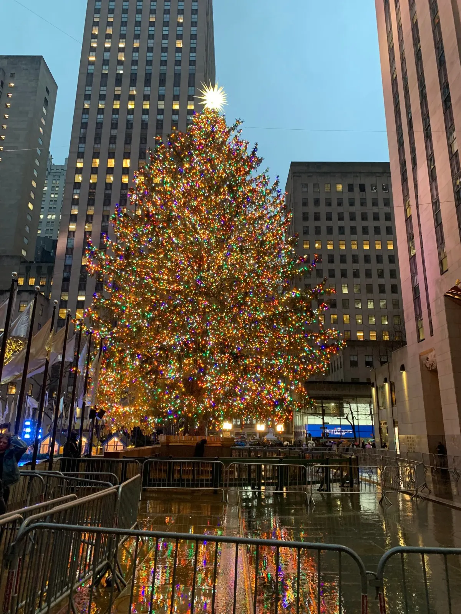
NYSE Stock Exchange has some holiday decorations outside the building.
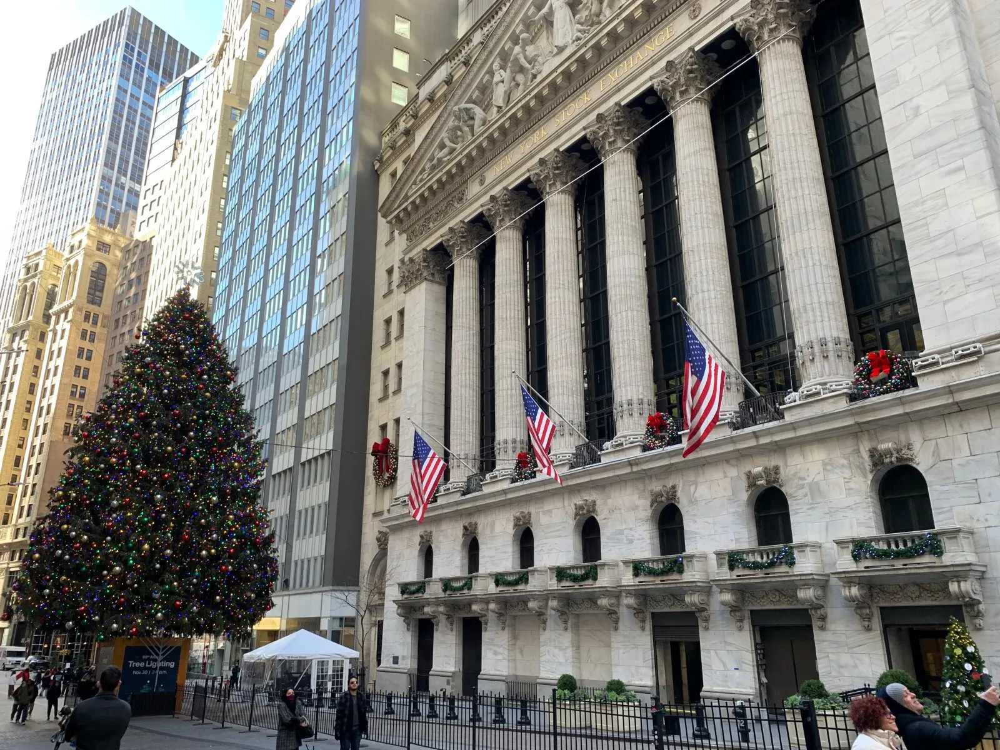
Hudson Yards has a shopping mall with a large light display. If you’re in the area it’s worth stopping by!
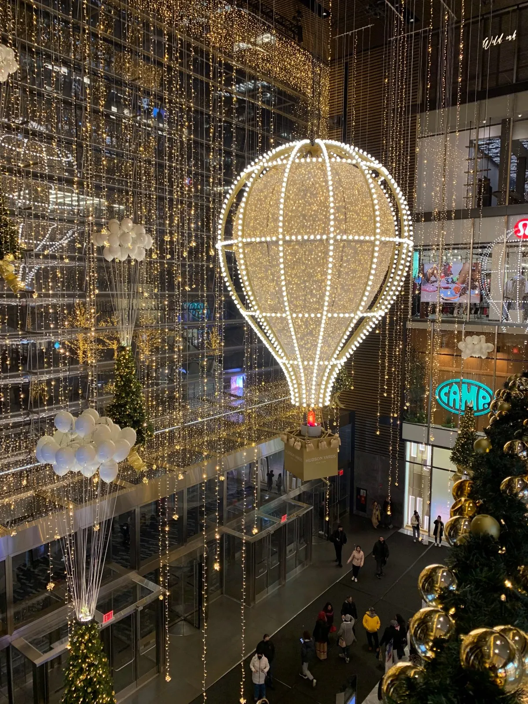
Dyker Heights is a neighborhood in Brooklyn known for its fabulous holiday decorations. I was not able to make it out here as it is quite a trek from Manhattan, but if you have the time and plan ahead, seems like it’s worth the trip!
3. Enjoy Holiday Drinks
Miracle on 9th St (Manhattan) or Miracle on Union (Brooklyn): Miracle on 9th St is inconveniently out of the way and far from a subway station (reservations were also booked through Christmas Day and I heard the wait times can be very long), but I was able to go to a similar one in Brooklyn — a Christmas popup holiday cocktail bar at Thief — with a less than 30 minute wait around 7pm. It had wonderfully warm Christmas vibes, with Christmas decorations, music, and delicious holiday drinks.
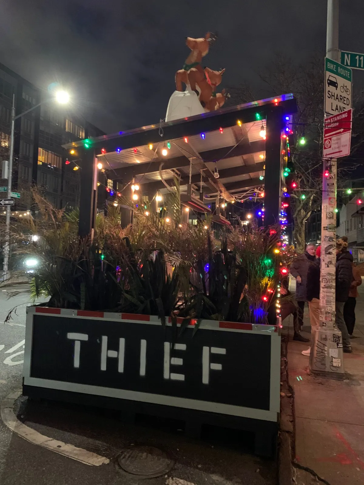
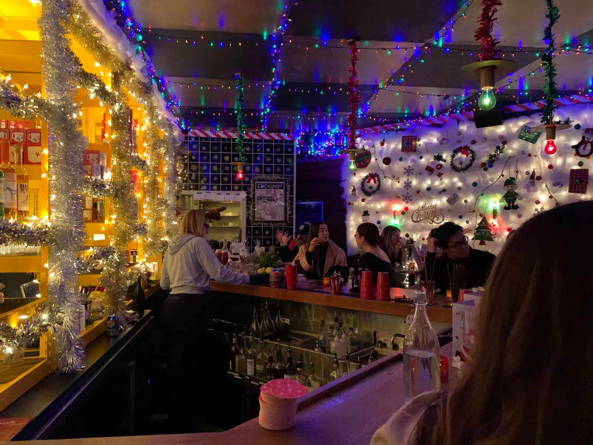

Tip: It can get quite cold in December, so make sure to bring a beanie, gloves, scarf, and winter coat. And wear comfortable waterproof sneakers or walking boots — I brought these cute black boots that I thought were good walking shoes, but a few hours of walking made clear that they were not. NYC is a walking city and not dressing appropriately can easily ruin a day out. But if you dress warmly, it is super worth it to visit the city around the holidays!